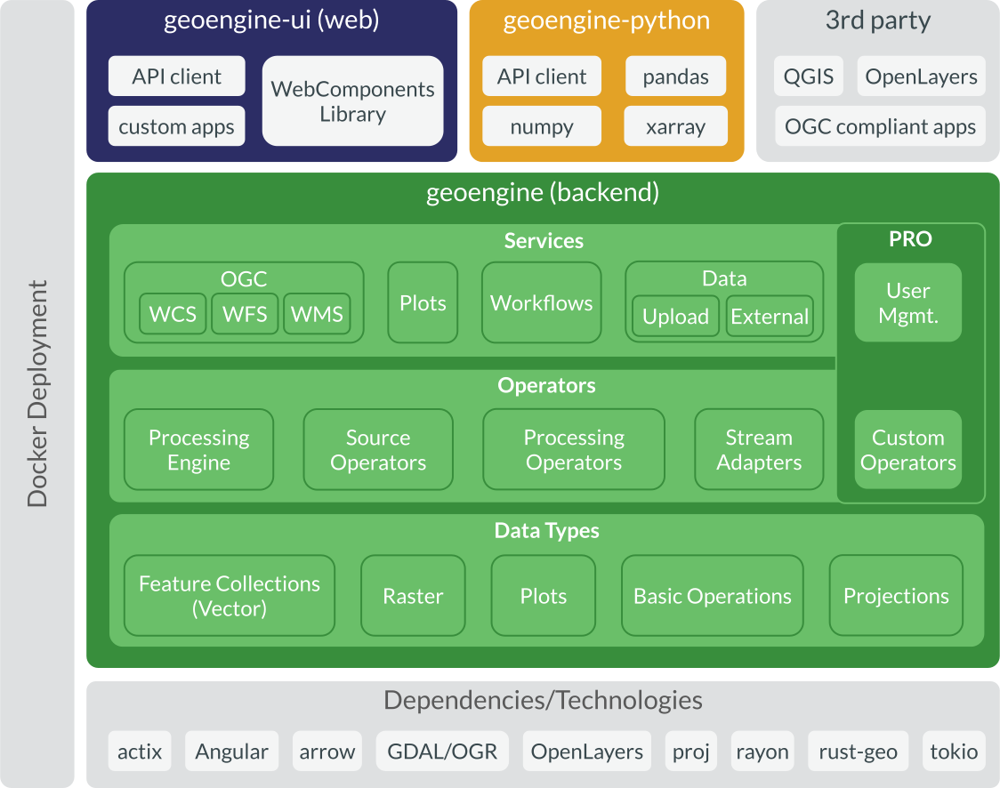
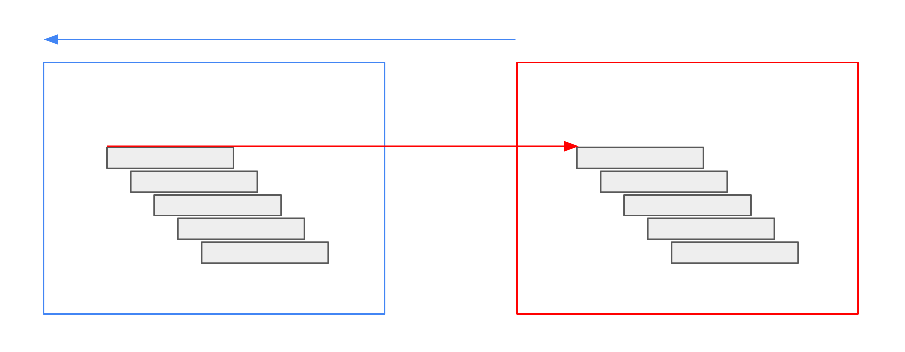
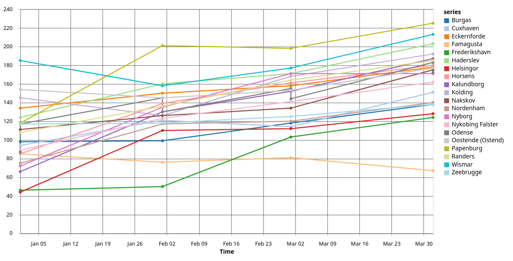

Geo Engine is a cloud-ready geo-spatial data processing platform. This documentation presents the foundations of the system and how to use it.
Geo Engine is a cloud-ready geospatial data processing platform. Here, we give an overview of its architecture and describe the main components.

Geo Engine consists of the backend and several frontends. The backend is subdivided into three subcomponents: services, operators, and data types. Data types specify primitives like feature collections for vector or gridded raster data. Moreover, it defines plots and basic operations, e.g., projections. The Operators block contains the processing engine and operators, i.e., source operators, raster- and vector time series processing. Furthermore, there are raster time series stream adapters, which can be used as building blocks for operators. The Services block contains protocols, e.g., OGC standard interfaces, as well as Geo Engine specific interfaces. These can be workflow registration, plot queries, and data upload. Each of the subcomponents can have additions in Geo Engine Pro, for instance, User Management, which is only available in Geo Engine Pro.
Operators
Services
Frontends for the Geo Engine are geoengine-ui for building web applications on top of Geo Engine. geoengine-python offers a Python library that can be used in Jupyter Notebooks. 3rd party applications like QGIS can access Geo Engine via its OGC interfaces.
geoengine-ui
geoengine-python
All components of Geo Engine are fully containerized and Docker-ready. Geo Engine builds upon several technologies, including GDAL, arrow, Angular, and OpenLayers.
This chapter introduces the API of Geo Engine.
This section introduces the workflow API of Geo Engine.
Call /workflow/{workflowId}/metadata to get the result descriptor of the workflow. It describes the result of the workflow by data type, spatial reference, temporal and spatial extent and some more information that is specific to raster and vector results.
/workflow/{workflowId}/metadata
{ "type": "raster", "dataType": "U8", "spatialReference": "EPSG:4326", "measurement": { "type": "unitless" }, "noDataValue": 0.0, "time": { "start": "2014-01-01T00:00:00.000Z", "end": "2014-07-01T00:00:00.000Z" }, "bbox": { "upperLeftCoordinate": [-180.0, 90.0], "lowerRightCoordinate": [180.0, -90.0] } }
{ "type": "vector", "dataType": "MultiPoint", "spatialReference": "EPSG:4326", "columns": { "id": "int", "name": "text", "value": "float" }, "time": { "start": "2014-04-01T00:00:00.000Z", "end": "2014-07-01T00:00:00.000Z" }, "bbox": { "lowerLeftCoordinate": [3.9662060000000001, 45.9030360000000002], "upperRightCoordinate": [19.171284, 51.8473430000000022] } }
This chapter introduces the datatypes of Geo Engine.
A colorizer specifies a mapping between values and pixels/objects of an output image. Different variants of colorizers perform different kinds of mapping.
Usually, there are two miscellaneous fields in each colorizer, namely noDataColor and defaultColor. The field noDataColor is used for all missing, NaN or no data values. The defaultColor is used for all overflowing values, for instance, if there are breakpoints defined from 0 to 10, but a value of -5 or 11 is mapped to a color.
noDataColor
defaultColor
NaN
0
10
-5
11
Colors are defined as RGBA arrays, where the first three values refer to red, green and blue and the fourth one to alpha, which means transparency. The values range from 0 to 255. For instance, [255, 255, 255, 255] is opaque white and [0, 0, 0, 127] is semi-transparent black.
255
[255, 255, 255, 255]
[0, 0, 0, 127]
A linear gradient linearly interpolates values within breakpoints of a color table.
{ "type": "linearGradient", "breakpoints": [ { "value": 1.0, "color": [255, 255, 255, 255] }, { "value": 2.0, "color": [0, 0, 0, 255] } ], "noDataColor": [0, 0, 0, 0], "defaultColor": [0, 0, 0, 0] }
A logarithmic gradient logarithmically interpolates values within breakpoints of a color table and allows only positive values.
Services report errors that try to use a logarithmic gradient specification with values where value <= 0.
value <= 0
{ "type": "logarithmicGradient", "breakpoints": [ { "value": 1.0, "color": [255, 255, 255, 255] }, { "value": 2.0, "color": [0, 0, 0, 255] } ], "noDataColor": [0, 0, 0, 0], "defaultColor": [0, 0, 0, 0] }
A palette maps values as classes to a certain color. Unmapped values result in the NO DATA color.
{ "type": "palette", "colors": { "1": [255, 255, 255, 255], "2": [0, 0, 0, 255] }, "noDataColor": [0, 0, 0, 0], "defaultColor": [0, 0, 0, 0] }
Measurements describe stored data, i.e. what is measured and in which unit.
Some values do not have an associated measurement or no information is present.
{ "type": "unitless" }
The type continuous specifies a continuous variable that is measured in a certain unit.
continuous
{ "type": "continuous", "measurement": "Reflectance", "unit": "%" }
A classification maps numbers to named classes.
{ "type": "classification", "measurement": "Land Cover", "classes": { "0": "Grassland", "1": "Forest", "2": "Water" } }
A query rectangle defines a multi-dimensional spatial query in Geo Engine. It consists of three parts:
The spatial bounds behave differently for raster, vector, or plot queries. For raster queries, the spatial bounds define a spatial partition. This means the lower right corner of the spatial bounds is not included in the query. For vector queries, the spatial bounds define a bounding box, i.e., a rectangle where all bounds are included. Plot queries behave like vector queries.
{ "spatial_bounds": { "upper_left_coordinate": { "x": 10.0, "y": 20.0 }, "lower_right_coordinate": { "x": 70.0, "y": 80.0 } }, "time_interval": { "start": "2010-01-01T00:00:00Z", "end": "2011-01-01T00:00:00Z" }, "spatial_resolution": { "x": 1.0, "y": 1.0 } }
Rasters can have the following data types:
"U8"
A time instance is a single point in time. It is specified in UTC time zone 0 and has a maximum resolution of milliseconds.
Specifying in ISO 8601:
"2010-01-01T00:00:00Z"
Using the same date as a UNIX timestamp in milliseconds:
1262304000000
A time interval consists of two TimeInstances. Please be aware, that the interval is defined in close-open semantics. This means, that the start time is inclusive and the end time of the interval is exclusive. In mathematical notation, the interval is defined as [start, end).
TimeInstance
[start, end)
{ "start": "2010-01-01T00:00:00Z", "end": "2011-01-01T00:00:00Z" }
Using the same date as UNIX timestamps in milliseconds:
{ "start": 1262304000000, "end": 1293840000000 }
A time step consists of granularity and the number of steps. For instance, you can specify yearly steps by settings the granularity to Years and the number of steps to 1. Half-yearly steps can be specified by setting the granularity to Months and the number of steps to 6.
Years
Months
granularity
TimeGranularity
months
step
integer
The granularity of the time steps can take one of the following values.
millis
seconds
minutes
hours
days
years
{ "granularity": "months", "step": 1 }
This chapter introduces the operators of Geo Engine.
The ColumnRangeFilter operator allows filtering FeatureCollections. Users can define one or more data ranges for a column in the data table that is then filtered. The filter can be used for numerical as well as textual columns. Each range is inclusive, i.e., [start, end] includes as well the start as the end.
ColumnRangeFilter
FeatureCollection
[start, end]
start
end
For instance, you can filter a collection to only include column values that are either in the range 0-10 or 20-30. Moreover, you can specify the range a to k to dismiss all column values that start with larger letters in the alphabet.
a
k
column
"precipitation"
ranges
[[42,43]]
keepNulls
true
The ColumnRangeFilter operator expects exactly one vector input.
vector
SingleVectorSource
If the value in the column parameter is not a column of the feature collection, an error is thrown.
{ "type": "ColumnRangeFilter", "params": { "column": "population", "ranges": [[1000, 10000]], "keepNulls": false }, "sources": { "vector": { "type": "OgrSource", "params": { "dataset": { "type": "internal", "datasetId": "e977b123-ca47-4c5b-aace-481119826aaf" }, "attributeProjection": ["name", "population"] } } } }
{ "type": "ColumnRangeFilter", "params": { "column": "name", "ranges": [ ["a", "k"], ["v", "z"] ], "keepNulls": false }, "sources": { "vector": { "type": "OgrSource", "params": { "dataset": { "type": "internal", "datasetId": "e977b123-ca47-4c5b-aace-481119826aaf" }, "attributeProjection": ["name", "population"] } } } }
The Expression operator performs a pixel-wise mathematical expression on one or more raster sources. The expression is specified as a user-defined script in a very simple language. The output is a raster time series with the result of the expression and with time intervals that are the same as for the inputs. Users can specify an output data type. Internally, the expression is evaluated using floating-point numbers.
Expression
An example usage scenario is to calculate NDVI for a red and a near-infrared raster channel. The expression uses two raster sources, referred to as A and B, and calculates the formula (A - B) / (A + B). When the temporal resolution is months, our output NDVI will also be a monthly time series.
(A - B) / (A + B)
expression
outputType
RasterDataType
U8
outputNoDataValue
Number
-2
outputMeasurement
Measurement
{ "type": "continuous", "measurement": "NDVI"}
mapNoData
bool
false
The following describes the types used in the parameters.
Expressions are simple scripts to perform pixel-wise computations. One can refer to the raster inputs as A for the first raster, B for the second, and so on. Furthermore, expressions can check with A IS NODATA, B IS NODATA, etc for NO DATA values. This is important if mapNoData is set to true. Otherwise, NO DATA values are mapped automatically to the output NO DATA value. Finally, the value out_nodata can be used to output NO DATA.
A
B
A IS NODATA
B IS NODATA
out_nodata
Users can think of this implicit function signature for, e.g., two inputs:
fn (A: f64, B: f64, out_nodata: f64) -> f64
As a start, expressions contain algebraic operations and mathematical functions.
(A + B) / 2
In addition, branches can be used to check for conditions.
if A IS NODATA { B } else { A }
Function calls can be used to access utility functions.
max(A, 0)
Currently, the following functions are available:
abs(a)
min(a, b)
min(a, b, c)
max(a, b)
max(a, b, c)
sqrt(a)
ln(a)
log10(a)
cos(a)
sin(a)
tan(a)
acos(a)
asin(a)
atan(a)
pi()
e()
round(a)
ceil(a)
floor(a)
mod(a, b)
to_degrees(a)
to_radians(a)
To generate more complex expressions, it is possible to have variable assignments.
let mean = (A + B) / 2; let coefficient = 0.357; mean * coefficient
Note, that all assignments are separated by semicolons. However, the last expression must be without a semicolon.
The Expression operator expects one to eight raster inputs.
SingleRasterSource
C
The parsing of the expression can fail if there are, e.g., syntax errors.
{ "type": "Expression", "params": { "expression": "(A - B) / (A + B)", "outputType": "F32", "outputNoDataValue": "NAN", "mapNoData": false }, "sources": { "A": { "type": "GdalSource", "params": { "dataset": { "type": "internal", "datasetId": "a626c880-1c41-489b-9e19-9596d129859c" } } }, "B": { "type": "GdalSource", "params": { "dataset": { "type": "internal", "datasetId": "699b9e14-4bd6-4d57-889a-58f60288b19c" } } } } }
The GdalSource is a source operator that reads raster data using GDAL. The counterpart for vector data is the OgrSource.
GdalSource
OgrSource
dataset
DatasetId
{ "type": "internal", "datasetId": "a626c880-1c41-489b-9e19-9596d129859c"}
None
If the given dataset does not exist or is not readable, an error is thrown.
{ "type": "GdalSource", "params": { "dataset": { "type": "internal", "datasetId": "a626c880-1c41-489b-9e19-9596d129859c" } } }
The OgrSource is a source operator that reads vector data using OGR. The counterpart for raster data is the GdalSource.
{ "type": "internal", "datasetId": "e977b123-ca47-4c5b-aace-481119826aaf"}
attributeProjection
Array<String>
["name", "population"]
attributeFilters
Array<AttributeFilter>
[{"attribute": "populuation", "ranges": [[1000, 10000]]}]
The AttributeFilter defines one or more ranges on the values of an attribute. The ranges include the lower and upper bounds of the range.
AttributeFilter
attribute
String
Array<Array<String \| Number>>
{ "type": "OgrSource", "params": { "dataset": { "type": "internal", "datasetId": "e977b123-ca47-4c5b-aace-481119826aaf" }, "attributeProjection": ["name", "population"], "attributeFilters": [ { "attribute": "population", "ranges": [[1000, 10000]], "keepNulls": false } ] } }
The PointInPolygon operator filters point features of a (multi-)point collection with polygons. In more detail, the points of each feature are checked against the polygons of the other collection. If one or more point is included in any polygon's ring, the feature is included in the output.
PointInPolygon
For instance, you can filter tree features inside the polygons of a forest. All features, that weren't inside any forest polygon, are considered either part of another forest or outliers and are thus removed.
The operator is parameterless.
The PointInPolygon operator expects two vector inputs.
points
polygons
If the points vector input is not a (multi-)point feature collection, an error is thrown.
If the polygons vector input is not a (multi-)polygon feature collection, an error is thrown.
{ "type": "PointInPolygon", "params": {}, "sources": { "points": { "type": "OgrSource", "params": { "dataset": { "type": "internal", "datasetId": "e977b123-ca47-4c5b-aace-481119826aaf" }, "attributeProjection": ["name", "population"] } }, "polygons": { "type": "OgrSource", "params": { "dataset": { "type": "internal", "datasetId": "b6191257-6d61-4c6b-90a4-ebfb1b23899d" } } } } }
The Reprojection operator reprojects data from one spatial reference system to another. It accepts exactly one input which can either be a raster or a vector data stream. The operator produces all data that, after reprojection, is contained in the query rectangle.
Reprojection
The concrete behavior depends on the data type.
The reprojection operator reprojects all coordinates of the features individually. The result contains all features that, after reprojection, are intersected by the query rectangle. If not all coordinates of the vector data stream could be projected, the operator returns an error.
To create tiles in the target projection, the operator first loads the corresponding tiles in the source projection. Note, that in order to create one reprojected output tile, it may be necessary to load multiple source tiles. For each output pixel, the operator takes the value of the input pixel nearest to its upper left corner.
In order to obtain precise results but avoid loading too much data, the operators estimate the resolution in which it loads the input raster stream. The estimate is based on the target resolution defined by the query rectangle and the relationship between the length of the diagonal of the query rectangle in both projections. Please refer to the source code for details.
In case a tile, or part of a tile, is not available in the source projection because it is outside of the defined extent, the operator will produce pixels with no data values. If the input raster stream has no no data value defined, the value 0 will be used instead.
targetSpatialReference
EPSG:4326
The Reprojection operator expects exactly one raster or vector input.
source
RasterOrVectorOperator
The operator returns an error if the target projection is unknown or if the input data cannot be reprojected.
{ "type": "Reprojection", "params": { "targetSpatialReference": "EPSG:4326" }, "sources": { "source": { "type": "GdalSource", "params": { "dataset": { "type": "internal", "datasetId": "a626c880-1c41-489b-9e19-9596d129859c" } } } } }
The TemporalRasterAggregation aggregates a raster time series into uniform time intervals (windows). The output is a time series that begins with the first window that contains the start of the query time. Each time slice has the same length, defined by the window parameter. The pixel values are computed by aggregating all rasters that are contained in the input and that are valid in the current window using the defined aggregation method. All output slices that are contained in the query time interval are produced by the operator. The optional windowReference parameter allows specifying a custom anchor point for the windows. This is the imagined start from which on the timeline is divided into uniform aggregation windows. By default it is 1970-01-01T00:00:00Z which means that windows of, e.g., 1 hour or 1 month will begin at the full hour or the start of the month.
TemporalRasterAggregation
window
aggregation
windowReference
1970-01-01T00:00:00Z
An example usage scenario is to transform a daily raster time series into monthly aggregates. Here, the query should start at the beginning of the month and the window should be 1 month. The aggregation method allows calculating, e.g., the maximum or mean value for each pixel. If we perform a query with time [2021-01-01, 2021-04-1), we would get a time series with three time steps. If we perform a query with an instant like [2021-01-01, 2021-01-1), we will get a single time step containing the aggregated values for January 2021.
Aggregation
{ "type": "max", "ignoreNoData": false}
TimeStep
{ "granularity": "Months", "step": 1}
There are different methods that can be used to aggregate the raster time series. Encountering a no data value makes the aggregation value of a pixel also no data unless the ignoreNoData parameter is set to true.
ignoreNoData
min
max
first
last
mean
The TemporalRasterAggregation operator expects exactly one raster input.
raster
If the aggregation method is first, last, or mean` and the input raster has no no data value, an error is thrown.
first,
, or
{ "type": "TemporalRasterAggregation", "params": { "aggregation": { "type": "max", "ignoreNoData": false }, "window": { "granularity": "Months", "step": 1 }, "windowReference": "1970-01-01T00:00:00Z", "sources": { "raster": { "type": "GdalSource", "params": { "dataset": { "type": "internal", "datasetId": "a626c880-1c41-489b-9e19-9596d129859c" } } } } } }
The TimeProjection projects vector dataset timestamps to new granularities and ranges. The output is a new vector dataset with the same geometry and attributes as the input. However, each time step is projected to a new time range. Moreover, the QueryRectangle's temporal extent is enlarged as well to include the projected time range.
TimeProjection
QueryRectangle
An example usage scenario is to transform snapshot observations into yearly time slices. For instance, animal occurrences are observed at a daily granularity. If you want to aggregate the data to a yearly granularity, you can use the TimeProjection operator. This will change the validity of each element in the dataset to the full year where it was observed. This is, for instance, useful when you want to combine it with raster time series and use different temporal semantics than the originally recorded validities.
{ "granularity": "years", "step": 1}
stepReference
The TimeProjection operator expects exactly one vector input.
If the step is negative, an error is thrown.
{ "type": "TimeProjection", "params": { "step": { "granularity": "years", "step": 1 } }, "sources": { "vector": { "type": "OgrSource", "params": { "dataset": { "type": "internal", "datasetId": "a626c880-1c41-489b-9e19-9596d129859c" } } } } }
The TimeShift operator allows retrieving data temporally relative to the actual QueryRectangle. It shifts the query rectangle by a given amount of time and modifies the result data accordingly. Users have two options for specifying the time shift:
TimeShift
The output is either a stream of raster data or a stream of vector data depending on the input.
An example usage scenario is to compare the current time with the previous time of the same raster data. For instance, a raster source outputs monthly data aggregates of mean temperatures. If you want to compute the difference between the current month and the previous month, you can use the TimeShift operator. You will have two workflows. One is the unmodified temperature raster source. The other is the same source, shifted by one month. Then, you can use both workflows as sources of an Expression operator.
Note: This operator modifies the time values of the returned data. For rasters and vector data, it shifts the time intervals opposite to the time shift specified in the operator. This is necessary to have only data inside the result that is part of the QueryRectangle's time interval. As an example, we shift monthly data by one month to the past. Our query rectangle points to February. Then, the operator shifts the query rectangle to January. The data, originally valid for January, is shifted forward to February again, to fit into the original query rectangle, which is February. 
type
relative
absolute
"relative"
If type is relative, you need to specify the following parameters:
"months"
value
-1
If the type is absolute, you need to specify the following parameters:
timeInterval
TimeInterval
{ "start": "2010-01-01T00:00:00Z", "end": "2010-02-01T00:00:00Z"}
The TimeShift operator expects either one vector input or one raster input.
SingleRasterOrVectorSource
{ "type": "TimeShift", "params": { "type": "relative", "granularity": "months", "value": -1 }, "sources": { "source": { "type": "GdalSource", "params": { "dataset": { "type": "internal", "datasetId": "00000000-0000-0000-0000-000000000539" } } } } }
{ "type": "TimeShift", "params": { "type": "absolute", "time_interval": { "start": "2010-01-01T00:00:00Z", "end": "2010-02-01T00:00:00Z" } }, "sources": { "source": { "type": "GdalSource", "params": { "dataset": { "type": "internal", "datasetId": "00000000-0000-0000-0000-000000000539" } } } } }
The VectorJoin operator allows combining multiple vector inputs into a single feature collection. There are multiple join variants defined, which are described below.
VectorJoin
For instance, you want to join tabular data to a point collection of buildings. The point collection contains the geolocation of the buildings and their id. The attribute data collection has the building id and the height information. Combining the two feature collections leads to a single point collection with geolocation and height information.
EquiGeoToData
"EquiGeoToData"
leftColumn
"id"
rightColumn
rightColumn_suffix
right
"right"
The VectorJoin operator expects two vector inputs.
left
If the value in the left parameter is not a column of the left feature collection, an error is thrown.
If the value in the right parameter is not a column of the right feature collection, an error is thrown.
If the left input is not a geo data collection, an error is thrown.
If the right input is not a (non-geo) data collection, an error is thrown.
{ "type": "VectorJoin", "params": { "type": "EquiGeoToData", "leftColumn": "id", "rightColumn": "id", "rightColumnSuffix": "_other" }, "sources": { "points": { "type": "OgrSource", "params": { "dataset": { "type": "internal", "datasetId": "e977b123-ca47-4c5b-aace-481119826aaf" }, "attributeProjection": ["name", "population"] } }, "polygons": { "type": "OgrSource", "params": { "dataset": { "type": "internal", "datasetId": "b6191257-6d61-4c6b-90a4-ebfb1b23899d" } } } } }
The VisualPointClustering is a clustering operator for point collections that removes clutter and preserves the spatial structure of the input. The output is a point collection with a count and radius attribute. The operator utilizes the input resolution of the query to determine when points, being displayed as circles, would overlap. Moreover, it allows aggregating non-geo attributes to preserve the other columns of the input. For more information on the algorithm, cf. the paper Beilschmidt, C. et al.: A Linear-Time Algorithm for the Aggregation and Visualization of Big Spatial Point Data. SIGSPATIAL/GIS 2017: 73:1-73:4.
VisualPointClustering
An exemplary use case for this operator is the visualization of point data in an online map application. There, you can use this operator as the final step of the workflow to cluster the points and display them as circles. These circles then pose a decluttered view of the data, e.g., via a WFS endpoint.
minRadiusPx
deltaPx
1
radiusColumn
"__radius"
countColumn
"__count"
columnAggregates
MeanNumber
StringSample
Null
{ "foo": { "columnName": "numericColumn", "aggregateType": "MeanNumber", "measurement": { "type": "unitless" } }, "bar": { "columnName": "textColumn", "aggregateType": "StringSample" }}
The VisualPointClustering operator expects exactly one vector input that must be a point collection.
If the source value vector is not a point collection, an error is thrown.
If multiple columns in columnAggregates have the same names, an error is thrown.
{ "type": "VisualPointClustering", "params": { "minRadiusPx": 8.0, "deltaPx": 1.0, "radiusColumn": "__radius", "countColumn": "__count", "columnAggregates": { "mean_population": { "columnName": "population", "aggregateType": "MeanNumber", "measurement": { "type": "unitless" } }, "sample_names": { "columnName": "name", "aggregateType": "StringSample" } } }, "sources": { "vector": { "type": "OgrSource", "params": { "dataset": { "type": "internal", "datasetId": "e977b123-ca47-4c5b-aace-481119826aaf" }, "attributeProjection": ["name", "population"] } } } }
Plots are special kinds of operators that generate visualizations.
Geo Engine supports three output types:
jsonPlain
jsonVega
imagePng
Thus, plots can contain statistics, visualizations, and images.
The BoxPlot is a plot operator that computes a box plot over
BoxPlot
Thereby, the operator considers all data in the given query rectangle.
The boxes of the plot span the 1st and 3rd quartile and highlight the median. The whiskers indicate the minimum and maximum values of the corresponding attribute or raster.
In the case of vector data, the operator generates one box for each of the selected numerical attributes. The operator returns an error if one of the selected attributes is not numeric.
columnNames
Vec<String>
["x","y"]
For raster data, the operator generates one box for each input raster.
Raster-1
Raster-2
["A","B"]
includeNoData
The operator consumes exactly one vector or multiple raster operators.
MultipleRasterOrSingleVectorSource
The operator returns an error in the following cases.
If your dataset contains infinite or NAN values, they are ignored for the computation. Moreover, if your dataset contains more than 10.000values (which is likely for rasters), the median and quartiles are estimated using the P^2 algorithm described in:
infinite
NAN
10.000
R. Jain and I. Chlamtac, The P^2 algorithm for dynamic calculation of quantiles and histograms without storing observations, Communications of the ACM, Volume 28 (October), Number 10, 1985, p. 1076-1085. https://www.cse.wustl.edu/~jain/papers/ftp/psqr.pdf
{ "type": "BoxPlot", "params": { "columnNames": ["x", "y"] }, "sources": { "source": { "type": "OgrSource", "params": { "dataset": { "type": "internal", "datasetId": "a626c880-1c41-489b-9e19-9596d129859c" } } } } }
{ "type": "BoxPlot", "params": { "columnNames": ["A", "B"], "includeNoData": true }, "sources": { "source": [ { "type": "GdalSource", "params": { "dataset": { "type": "internal", "datasetId": "a626c880-1c41-489b-9e19-9596d129859c" } } }, { "type": "GdalSource", "params": { "dataset": { "type": "internal", "datasetId": "a626c880-1c41-489b-9e19-9596d129859c" } } } ] } }
The ClassHistogram is a plot operator that computes a histogram plot either over categorical attributes of a vector dataset or categorical values of a raster source. The output is a plot in Vega-Lite specification.
ClassHistogram
For instance, you want to plot the frequencies of the classes of a categorical attribute of a feature collection. Then you can use a class histogram to visualize and assess this.
columnName
string
"temperature"
The operator consumes either one vector or one raster operator.
The operator returns an error if…
The operator returns an error if
The operator only uses values of the categorical Measurement. It ignores missing or no-data values and values that are not covered by the Measurement.
{ "type": "ClassHistogram", "params": { "columnName": "foobar" }, "sources": { "vector": { "type": "OgrSource", "params": { "dataset": { "type": "internal", "datasetId": "a626c880-1c41-489b-9e19-9596d129859c" } } } } }
The FeatureAttributeValuesOverTime is a plot operator that computes a multi-line plot for feature attribute values over time. For distinguishing features, the data requires an id column. The output is a plot in Vega-Lite specification.
FeatureAttributeValuesOverTime

For instance, you want to plot the NDVI values of a feature collection of trees. Then, you can use a multi-line plot to visualize the trees by their id.
idColumn
id
valueColumn
The operator consumes exactly one vector operator.
The operator returns an error if the selected columns ( idColumn and valueColumn) do not exist or valueColumn is not numeric.
The operator processes a maximum of 20 different ids. After recognizing more than 20 different ids, the operator ignores the rest.
20
{ "type": "FeatureAttributeValuesOverTime", "params": { "idColumn": "id", "valueColumn": "temperature" }, "sources": { "vector": { "type": "OgrSource", "params": { "dataset": { "type": "internal", "datasetId": "a626c880-1c41-489b-9e19-9596d129859c" } } } } }
The Histogram is a plot operator that computes a histogram plot either over attributes of a vector dataset or values of a raster source. The output is a plot in Vega-Lite specification.
Histogram
For instance, you want to plot the data distribution of numeric attributes of a feature collection. Then you can use a histogram with a suitable number of buckets to visualize and assess this.
bounds
HistogramBounds
data
values
{ "min": 0.0, "max": 20.0}
"data"
buckets
interactive
boolean
The operator returns an error if the selected column (columnName) does not exist or is not numeric.
If bounds or buckets are not defined, the operator will determine these values by itself which requires processing the data twice.
If the buckets parameter is unset, the operator estimates it using the square root of the number of elements in the data.
{ "type": "Histogram", "params": { "columnName": "foobar", "bounds": { "min": 5.0, "max": 10.0 }, "buckets": 15, "interactive": false }, "sources": { "vector": { "type": "OgrSource", "params": { "dataset": { "type": "internal", "datasetId": "a626c880-1c41-489b-9e19-9596d129859c" } } } } }
The MeanRasterPixelValuesOverTime is a plot operator that computes a time series plot of mean raster values. For each time step in the raster time series, it computes one mean value. The output is a plot in Vega-Lite specification.
MeanRasterPixelValuesOverTime
For instance, you want to plot the mean temperature of a monthly raster time series. Then, you can use this operator to generate a time series plot.
timePosition
center
"start"
area
The operator consumes exactly one raster operator.
{ "type": "MeanRasterPixelValuesOverTime", "params": { "timePosition": "start", "area": true }, "sources": { "raster": { "type": "GdalSource", "params": { "dataset": { "type": "internal", "datasetId": "a626c880-1c41-489b-9e19-9596d129859c" } } } } }
The ScatterPlot is a plot operator that computes a scatter plot over two attributes of a vector dataset. Thereby, the operator considers all data in the given query rectangle.
ScatterPlot
In case of more than 500 points to plot, the representation changes from a regular scatter plot to a 2D Histogram with buckets determined from the underlying data.
500
columnX
"width"
columnY
"height"
The operator returns an error if one of the selected columns does not exist or is not numeric.
If your dataset contains infinite or NAN values, they are ignored for the computation. Moreover, if your dataset contains more than 10.000 values, the buckets of the histogram are generated based on those 10.000values. Later values outside those bounds are ignored.
{ "type": "ScatterPlot", "params": { "columnX": "width", "columnY": "height" }, "sources": { "vector": { "type": "OgrSource", "params": { "dataset": { "type": "internal", "datasetId": "a626c880-1c41-489b-9e19-9596d129859c" } } } } }
The Statistics operator is a plot operator that computes count statistics of a raster source. The output is a JSON description.
Statistics
For instance, you want to get an overview of the raster data source. Then, you can use this operator to get basic count statistics.
This operator is parameterless.
The operator consumes one or more raster operators.
rasters
MultipleRasterSources
{ "type": "Statistics", "params": {}, "sources": { "rasters": [ { "type": "GdalSource", "params": { "dataset": { "type": "internal", "datasetId": "a626c880-1c41-489b-9e19-9596d129859c" } } } ] } }
[ { "pixelCount": 6, "nanCount": 0, "min": 1.0, "max": 6.0, "mean": 3.5, "stddev": 1.707 } ]